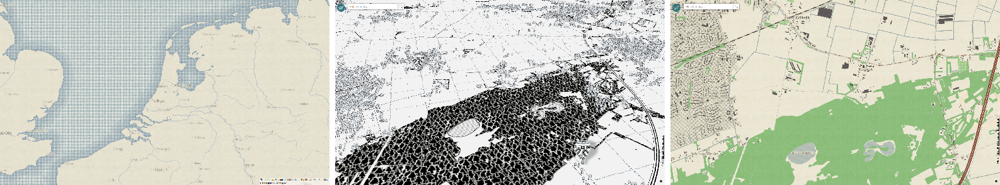
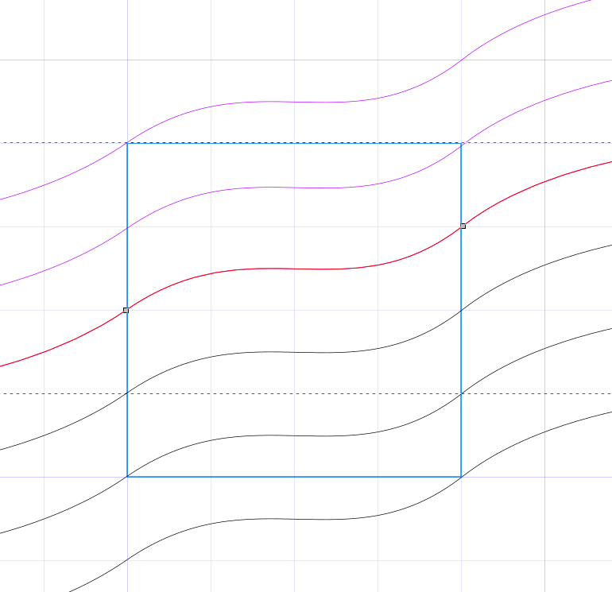
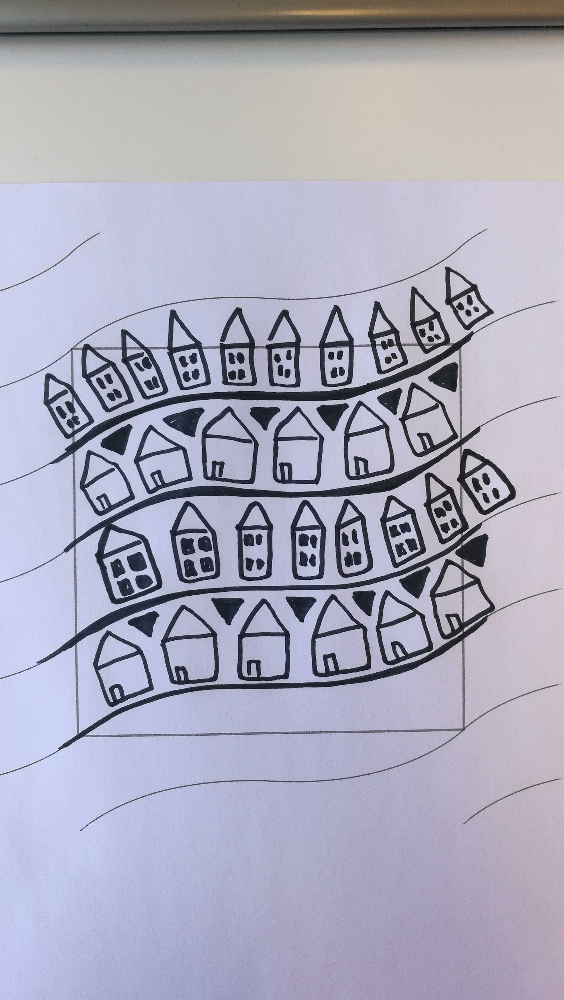

Styling Vector Tiles
By: Niene Boeijen
| @BNiene |
| NieneB |
| NieneB.nl |
| volvo_343_dl_1980 |
4 map examples and how to make them!
Map 1
See the Pen #takeaway 1: a Polygon does not have to be a Polygon! by Niene (@nieneb) on CodePen.
Take-Away#1: Know your tiles
Take-Away#2: a Polygon does not have to be a Polygon!!
Map 2
https://apps.webmapper.nl/takemeto1943/#14.5/51.76409/5.60482
What is a sprite?
sprite.json
sprite.png
{kind=link}
retina @2x pixelRatio = 2
Make sprite bigger and then smaller for pixelRatio = 1
Make JSON by hand:
Sprite
{
"iconname" : {
"width": 32,
"height": 32,
"x" : 0,
"y": 0,
"pixelRatio": 1
},
{...}
}
Finding coordinates in GIMP
GIMP pointer dialog
Export as png
Map 3
See the Pen #takeaway 2: Combine layers! Paint like Bob Ross by Niene (@nieneb) on CodePen.
Take-Away#5: Color Blender Tool https://meyerweb.com/eric/tools/color-blend/
Take-Away#3: Draw like Bob Ross. Visually combine your layers
Take-Away#6: Background on top! www.transparenttextures.com
https://tb.webmapper.nl/wm/styles/1943.json
Map 4
sprite in inkscape
 Advanced geospatial analysis for browsers
GeoJSON simple creation
var points = turf.randomPoint(25, {bbox: [-180, -90, 180, 90]})
See the Pen #takeaway 3: Javascript styling! by Niene (@nieneb) on CodePen.
Use Map events!
Seen the coffee stain? https://apps.webmapper.nl/takemeto1943/#14.5/51.76409/5.60482
if (!turf.booleanPointInPolygon(point, poly)){
// draw new random point when point out of view
map.getSource('points').setData(drawRandomPoints());
};| niene@webmapper.net |
| @BNiene |
| NieneB |
| NieneB.nl |
| Niene Boeijen |
| volvo_343_dl_1980 |